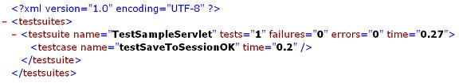
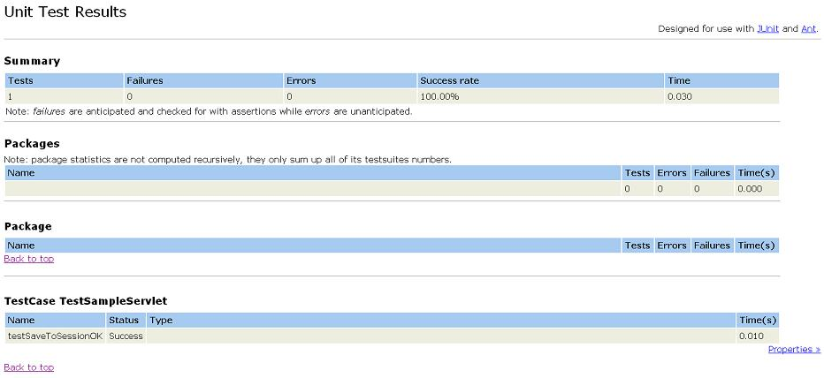

|
Last update : August 31 2002
Doc for : v1.4.1
About
What is Cactus ?
News
Changes
Features/Status
Goals
Roadmap/Todo
Contributors
Contributing
Cactus Users
Tested on ...
License
Downloads
Downloads
Documentation
How it works ?
Getting Started
Mock vs Container
Javadocs
FAQ
Howto Guides
Classpath Howto
Config Howto
Migration Howto
TestCase Howto
Jsp Howto
Runner Howto
Security Howto
Ant Howto
HttpUnit Howto
Sample Howto
EJB Howto
IDE Howto
Tomcat Howto
JUnitEE Howto
Support
Bug database
Mailing list
Misc.
Why the name ?
Logo Challenge
Resources
Test Coverage
Stats
Developers
CVS
Coding Conventions
Build results
Release Checklist
|
| Tomcat Quickstart forewords |
 |
This tutorial applies to Cactus 1.4 or greater and Tomcat 4.0 or
greater.
|
This document is a step by step tutorial that explains how to set up
Cactus and run Cactus tests in Tomcat in less than 10 minutes !
(discounting download time of course :-)).
There are 2 ways of packaging Cactus so that you can execute Cactus
tests on your application :
-
By putting all Cactus jars in your
WEB-INF/lib directory,
as described in the Classpath
Tutorial,
-
By putting the Cactus jars in your container classpath so that Cactus
will load them using the container Context class loader. This
tutorial will describe this strategy as it is the less intrusive one
and provides reuse of Cactus jars across several webapps.
In addition to this, there are several ways to trigger the execution of
the Cactus tests (see the TestRunner
Howto tutorial). We will describe the easiest one to set up in
this tutorial, which is by using a browser.
|
Step 1 to step 3 are a one time install steps that you need to perform
only once to be able to run Cactus tests within Tomcat.
|
|
| Step 1 : Install Tomcat |
Download Tomcat
4.0 or greater and unzip it in any directory. Let's call this directory
[tomcat root].
|
| Step 2 : Copy the Cactus jars |
Download the Cactus jars from the Cactus
download page. They are located in the lib/
directory in the zip.
Copy the following jars to [tomcat root]/common/lib :
-
cactus.jar
-
commons-httpclient.jar
-
commons-logging.jar
-
junit.jar
-
aspectjrt.jar
|
This is the minium set of jars needed. If later on you wish to use the
Cactus HttpUnit integration
you'll also need to copy httpunit.jar.
|
|
| Step 3 : Modify Tomcat web.xml |
Edit [tomcat root]/conf/web.xml and add the following at
the beginning of the file, after the <webapp> tag :
<servlet>
<servlet-name>ServletRedirector</servlet-name>
<servlet-class>org.apache.cactus.server.ServletTestRedirector</servlet-class>
<init-param>
<param-name>param1</param-name>
<param-value>value1 used for testing</param-value>
</init-param>
</servlet>
<servlet>
<servlet-name>ServletTestRunner</servlet-name>
<servlet-class>org.apache.cactus.server.runner.ServletTestRunner</servlet-class>
</servlet>
|
Then, after the last <servlet> definition (there
are a few provided by Tomcat in addition to our 2 above), add :
<servlet-mapping>
<servlet-name>ServletRedirector</servlet-name>
<url-pattern>/ServletRedirector</url-pattern>
</servlet-mapping>
<servlet-mapping>
<servlet-name>ServletTestRunner</servlet-name>
<url-pattern>/ServletTestRunner</url-pattern>
</servlet-mapping>
|
|
| Step 4 : Creating a sample applicaton to test |
We're now going to create a very very simple application to server
so that we can unit test it.
First, create the following directory structure :
[tomcat root]/webapps
|_ test
|_ WEB-INF
|_ classes
|
Then, create the following SampleServlet.java java source
file, compile it and copy the resulting .class file in
[tomcat root]/webapps/test/WEB-INF/classes. Note that
you can download the pre-compiled class file
here.
import javax.servlet.http.HttpServlet;
import javax.servlet.http.HttpServletRequest;
public class SampleServlet extends HttpServlet
{
public void saveToSession(HttpServletRequest request)
{
String testparam = request.getParameter("testparam");
request.getSession().setAttribute("testAttribute", testparam);
}
}
|
|
You'll notice that this isn't even a finished servlet ! However, this
shows that you can start testing your code with Cactus even before
you have finished writing it completely. Extreme Programmers should
like this :-)
|
We're now read to create our first Cactus test case. Create the
following TestSampleServlet.java java source file, compile
it and copy the resulting .class file in
[tomcat root]/webapps/test/WEB-INF/classes. Note that
you can download the pre-compiled class file
here.
import junit.framework.Test;
import junit.framework.TestSuite;
import org.apache.cactus.ServletTestCase;
import org.apache.cactus.WebRequest;
public class TestSampleServlet extends ServletTestCase
{
public TestSampleServlet(String theName)
{
super(theName);
}
public static Test suite()
{
return new TestSuite(TestSampleServlet.class);
}
public void beginSaveToSessionOK(WebRequest webRequest)
{
webRequest.addParameter("testparam", "it works!");
}
public void testSaveToSessionOK()
{
SampleServlet servlet = new SampleServlet();
servlet.saveToSession(request);
assertEquals("it works!", session.getAttribute("testAttribute"));
}
}
|
|
| Step 5 : Run the test |
Time to enjoy our hard work ! Start Tomcat by running
[tomcat root]/bin/startup.bat (for windows) or
[tomcat root]/bin/startup.sh (for unix).
Open a browser and point it at http://localhost:8080/test/ServletTestRunner?suite=TestSampleServlet
You should see :

|
| Step 6 : Even more fun ! |
Ok, that's nice ... But what if I want HTML instead of XML ? Don't
worry there is a solution. Grab the following
junit-noframes.xsl
stylesheet used to format JUnitReport Ant task results and drop it in
[tomcat root]/webapps/test. Then, open a browser and type
http://localhost:8080/test/ServletTestRunner?suite=TestSampleServlet&xsl=junit-noframes.xsl.
You should now see the following :

|
This will work with Internet Explorer as the XSL transformation is
performed on the client side (i.e by the browser). I'm not sure
about other browsers.
|
|
|
|